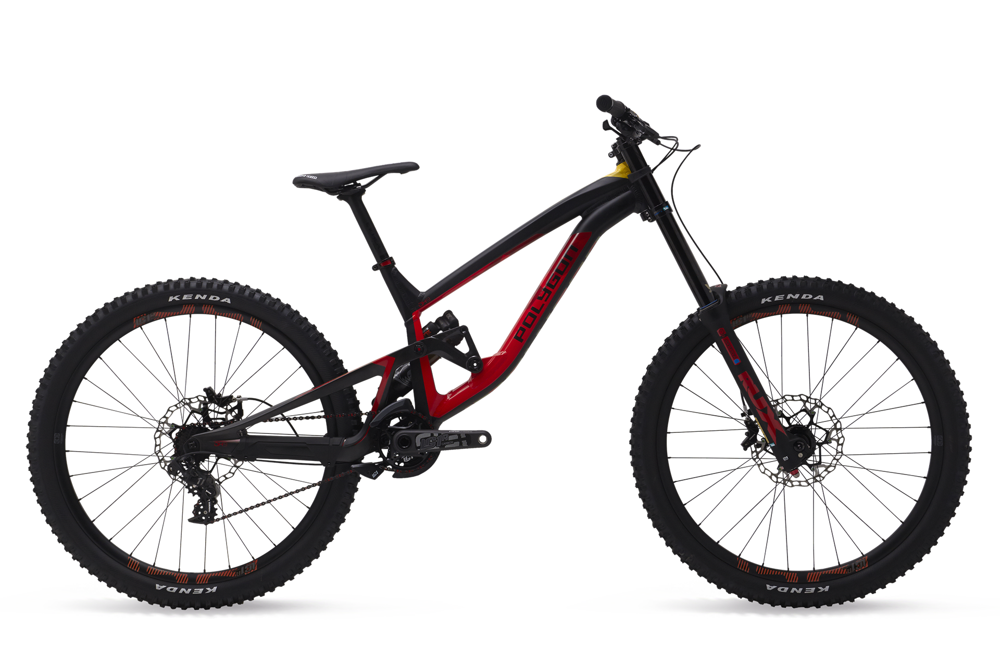
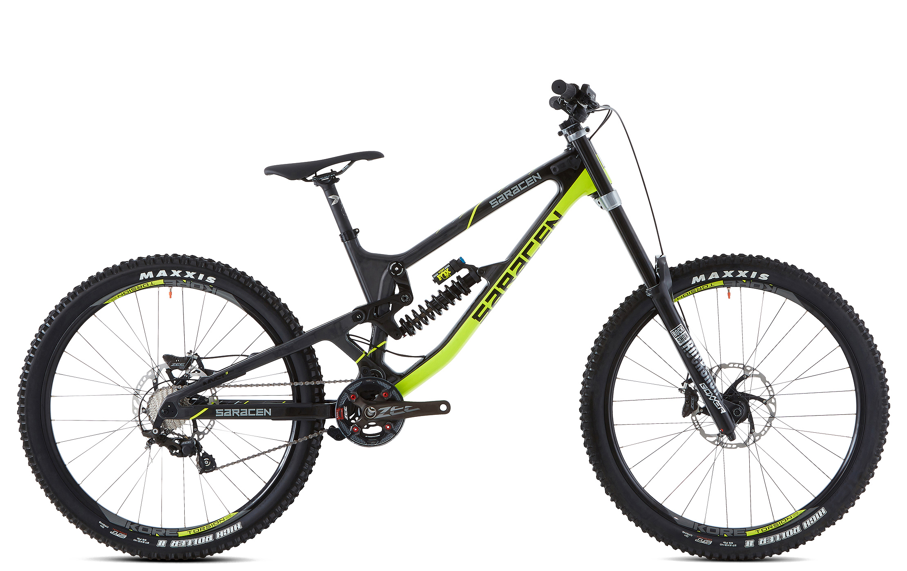
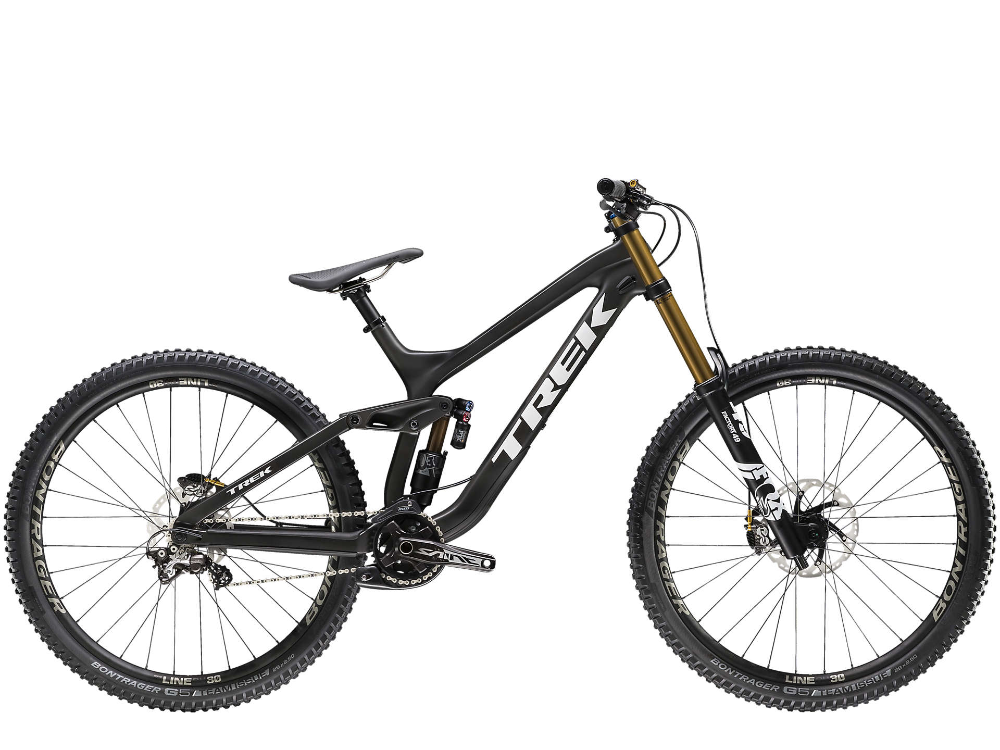

Bicicletas de downhill
Devinci wilson
El buque insignia de Devinci en DH, The Wilson, irrumpió por primera vez en la escena de la Copa del Mundo en 2011. Desde entonces, desde los podios en bolsillos hasta los parques en llamas, la bicicleta ha establecido el listón tanto para la innovación como para la inspiración. El triángulo delantero de aluminio, liviano y duradero de Wilson, está sinergizado con los asientos de carbono para un rendimiento de respuesta que anhela terrenos agresivos. Junto con la tecnología de marco moldeado por EPS, donde el cumplimiento vertical se une a la rigidez lateral, el manejo a alta velocidad entra en el ámbito de lo insuperable. Y también lo hace el flujo general, gracias al sistema de suspensión Split-Pivot de Wilson, con una inteligente posición de choque que hace que la basura se mueva y disminuya su centro gravitacional. Wilson DH. Feroz por naturaleza. Una fuerza por diseño.
Ir a Devinci bike web
Specialized Demo 8
Despiadado, rápido, agresivo... no importa cómo lo describas, el descenso de competición es exigente. Empezando por la bici, estás intentando controlar una situación incontrolable, llevando los límites hasta donde puedes. Pero cuando se trata de aprovechar al máximo la fuerza de la gravedad, manteniendo al mismo tiempo seguridad en tu conducción, simplemente no hay nada mejor que la S-Works Demo 8.
Ir a specialized bike web

Polygon collosus DH9
Collosus DH9 Team Edition es una colaboración especial entre el equipo de UR y Polygon Bikes. La bicicleta se presenta como una réplica de la bicicleta ganadora del equipo que está equipada con las especificaciones oficiales del equipo. El Collosus DH9 Team Edition tiene un nuevo extremo delantero más largo, distancia entre ejes alargada, y utiliza un nuevo diseño de enlace superior de carbono
Ir a Polygon Bikes

Saracen Myst Pro
Construida como una bicicleta de carrera privada y asesina, ofrece una receta que simplemente funciona. Un amortiguador trasero Fox Van RC junto con una horquilla Boxxer RC son fáciles de configurar y equilibrar. Un tren motriz Shimano Zee de 1x10 y los poderosos frenos Zee tienen un desempeño sólido que nunca pierde un latido. Se terminó con barras Kore Torsion, tija de sillín y llantas, rodando en Maxxis High Roller II con un compuesto Super Tacky.
Ir a Saracen Bikes

trek Session 9.9
La sesión 9.9 es el pináculo del rendimiento en bicicleta de montaña cuesta abajo. Está construido por una razón: ir tan rápido como sea posible por las colinas. Combina las piezas probadas de Shimano Saint con nuestro marco OCLV Mountain Carbon de primera calidad y la suspensión FOX Factory con ruedas súper rápidas de 29 ".
Ir a Trek Bikes